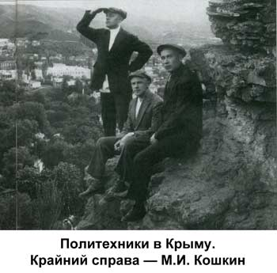
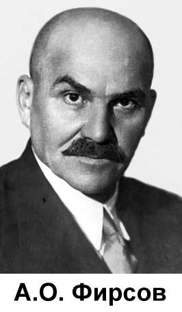
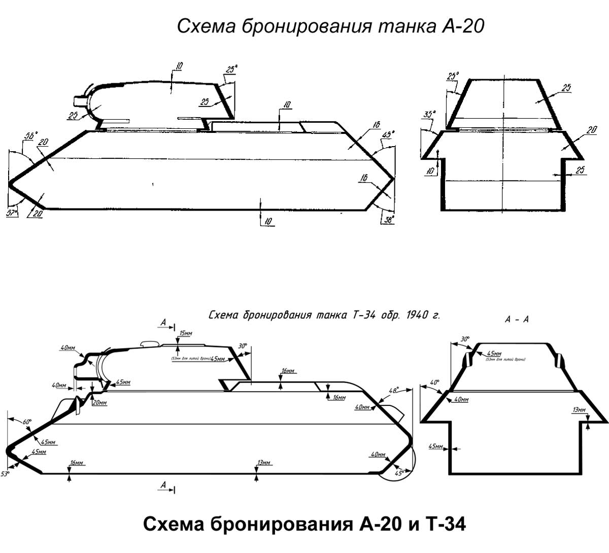
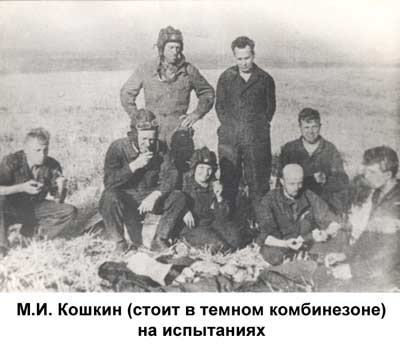

Родился 21 ноября (3 декабря по новому стилю) 1898 года в селе Брынчаги Угличского уезда Ярославской губернии, ныне Переславского района Ярославской области. Семья жила бедно, земли у семьи было мало и отец вынужден был заниматься отхожими промыслами. В 1905 году, работая на лесозаготовках, он надорвался и умер, оставив жену, вынужденную пойти батрачить, и троих малолетних детей. Михаил окончил церковноприходскую школу. С одиннадцати лет до призыва в армию работал на знаменитых кондитерских фабриках Москвы, сначала учеником кондитера, а затем и мастером.
С февраля 1917 года служил в армии Керенского рядовым. Весной в составе 58-го пехотного полка был отправлен на Западный фронт, в августе был ранен. Лечился в Москве, получил отпуск и в конце 1917 года был демобилизован. 15 апреля 1918 года поступил добровольцем в сформированный в Москве железнодорожный отряд Красной Армии. Участвовал в боях под Царицыном. В 1919 году переведён в Петроград в 3-й железнодорожный батальон, который перебрасывается на Северный фронт против английских интервентов, принимает участие в освобождении Архангельска. По дороге на Польский фронт заболел тифом и был снят с эшелона. После выздоровления направлен в 3-ю железнодорожную бригаду, участвовал в боях против Врангеля на Южном фронте. По воспоминаниям дочери, всего во время гражданской войны он переболел всеми тремя формами тифа, от которого тогда умирало много народу, но выкарабкался. И после этого больше не болел.
С 1919 по 1920 годы — политработник. После окончания Гражданской войны с 1921 по 1924 годы учился в Коммунистическом университете имени Я.М. Свердлова. После его окончания получил назначение в Вятку, куда прибыл на должность помощника директора кондитерской фабрики, став вскоре ее директором. Назначение это покажется удивительным, если не знать о «кондитерском» прошлом Кошкина. В короткое время фабрика под его руководством становится одним из самых благополучных предприятий Вятки. В музейных фондах есть любопытный документ — протокол заседания фабричного комитета, где содержится настоятельная просьба коллектива: на некоторое время задержать Михаила Ильича в нынешней должности перед назначением на вышестоящую. Мотив прост — он должен подготовить достойного преемника, иначе фабрика понесет с его уходом убытки.
С 1925 по 1926 годы М.И. Кошкин заведует агитационно-пропагандистским отделом райкома ВКП(б), с 1926 по 1928 годы — губернской совпартшколой, в 1928 году работает заместителем заведующего, с июля 1928 по август 1929 года — заведующим агитационно-пропагандистского отдела губернского комитета ВКП(б).
В 1929 году, в возрасте 31 года, по личному распоряжению С.М. Кирова в числе «парттысячников», зачислен в Ленинградский политехнический институт на кафедру «Автомобили и тракторы». В это время на кафедре работал очень сильный преподавательский состав. Среди них известные учёные профессора В.Ю. Гиттис (завкафедрой), Л.В. Клименко (будущий заведующий) и другие. Кафедра имела тесные связи с промышленными предприятиями и принимала участие в освоении заводской продукции. Так, профессор Клименко одновременно работал на заводе «Красный путиловец», где руководил разработкой конструкций и организацией производства легковых автомобилей Л-1 и пропашных тракторов типа У-1 и У-2. С другой стороны, к преподаванию на кафедре привлекались ведущие заводские специалисты.
В 1930-е годы в Ленинграде формировалась научная и производственная база танкостроения, и кафедра «Автомобили и тракторы» явилась основным звеном по подготовке квалифицированных кадров для этой отрасли. В те годы на кафедре учились такие выдающиеся впоследствии создатели систем, не имеющих аналогов в мире, как Н.Л. Духов (трижды Герой Социалистического Труда, лауреат Ленинской и пяти Сталинских премий), С.П. Изотов (конструктор авиационных двигателей и газотурбинного двигателя для танка Т-80, Герой Социалистического Труда, лауреат Ленинской, Сталинской и Государственной премий), Н.Ф. Шашмурин (создатель танков ИС-2, ИС-7 и ПТ-76, БТР-50П, лауреат Сталинской премии) и многие другие.
Надо отметить, что в наши дни Политехнический университет оказал большую услугу исследователям биографии М.И. Кошкина: на запрос Военно-исторического музея бронетанковой техники в подмосковной Кубинке была отослана копия опросного листа для поступающих в высшие учебные заведения, датированного 1930 годом, из которого удалось выяснить все этапы биографии выдающегося конструктора.
Производственную практику М.И. Кошкин проходил на Горьковском автозаводе. Директор ГАЗа доверил практиканту ответственную должность мастера дефектного отдела. Михаил не только заслужил почетную «Книжку ударника», но и зарекомендовал себя перспективным специалистом. Руководство ГАЗа вышло с ходатайством в Наркомат тяжелой промышленности о направлении Кошкина после окончания вуза на предприятие.
Преддипломная практика будущего инженера проходила в опытно-конструкторском отделе завода №185 в Ленинграде. Отдел занимался проектированием опытных образцов танков. Сегодня, пожалуй, и удивишься тому, насколько серьезные и ответственные задания доверяли студентам в те годы. В конструкторском коллективе не раз бывал Сергей Миронович Киров. Он-то и разглядел в серьезном студенте необыкновенный талант и природную одаренность. Вот как пишет об этом в своей документальной повести «Сотворение брони» уральский писатель Я. Резник: «Не раз, указывая на Кошкина, Сергей Миронович советовал: нагружайте его хорошенько, не бойтесь поручать сложную работу. Удивительно башковитый и цельный мужик. Этому по плечу большие дела, этот себя покажет».
После получения в 1934 году диплома М.И. Кошкин 2,5 года трудился в КБ того же завода №185, который получил имя убитого в 1934 г. С.М. Кирова. С должности рядового конструктора быстро дошёл до заместителя начальника КБ. За участие в создании среднего танка с противоснарядным бронированием Т-46-5 (Т-111) получил орден Красной Звезды. Участвовал также в создании танка Т-29.
С декабря 1936 года Кошкин возглавляет Конструкторское бюро Танкового отдела «Т2» завода № 183 — Харьковского паровозостроительного завода (ХПЗ). Ситуация в КБ была крайне сложная.
Семейство танков БТ было близко к исчерпанию своих возможностей, требовалось создавать новые танки. Но грамотных специалистов с высшим образованием в КБ было мало, опыта у них было гораздо меньше, чем у ленинградцев, которые смело экспериментировали на танках Т-26 и Т-28 со стабилизаторами вооружения и автоматическими гидромеханическими трансмиссиями. Даже талантливый А.А. Морозов, будущий создатель Т-34-85, Т-54, Т-64, прозванный коллегами за свои способности «Да Винчи», был всего лишь техником.
Положение осложнялась арестом бывшего начальника КБ А.О. Фирсова. Афанасий Осипович Фирсов, сын бердянского купца, закончил высшую техническую школу в Митвайде (Германия) и политехнический институт в Цюрихе (Швейцария), после чего работал на заводе «Зульцер». В Россию вернулся после начала Первой Мировой войны, работал на разных заводах, связанных с производством дизелей. В 1930 году устроился на ленинградский завод «Русский дизель», где вскоре был обвинен в участии во вредительской группе и арестован. Через год с небольшим коллегия ОГПУ приговор (5 лет лагерей) пересмотрела и отправила А.О.Фирсова руководить секретным танковым КБ в Харьков. Под его руководством не только вносились изменения в конструкцию танков БТ-2-БТ-5-БТ-7, но и было положено начало проработке нового танка с противоснарядным бронированием и 76,2-мм пушкой — предтече Т-34. Опытный дизелист, О.А. Фирсов внес вклад и в доводку дизельного двигателя. Но весной-летом 1936 года на танках БТ-7 начали массово выходить из строя коробки передач. Представители военной приёмки Автобронетанкового управления РККА на заводе № 183 вынуждены были прекратить приём готовых машин: БТ-7 в открытую называли «вредительским танком». А.О. Фирсов был снят с должности начальника КБ, на его место назначен М.И. Кошкин. Уже в должности рядового конструктора Фирсов оказал большую помощь своему преемнику. Но в середине 1937 года А.О. Фирсов был вновь арестован в числе ряда работников завода и военной приёмки АБТУ РККА, среди которых оказался и директор завода И.П. Бондаренко. Лишь за счет большого опыта партийно-организаторской работы М.И. Кошкину удалось остановить дальнейшие репрессии в КБ. Свою позицию он отстаивал столь энергично, что получил прозвище «Ярый». Но первый опыт КБ под руководством Кошкина окончился неудачей — проект танка БТ-9 был отклонён осенью 1937 года по причине грубых конструктивных ошибок и несоответствия требованиям задания.
По итогам боев в Испании военные хотели новый танк — дальнейшее развитие семейства БТ. Он должен был выдерживать огонь крупнокалиберных пулеметов и иметь три ведущих моста, — с одним ведущим мостом езда на колесах вне дорог с твердым покрытием была невозможна. Проект назвали А-20: индекс «А» был присвоен Харьковскому паровозостроительному заводу Правительством СССР.
Для выполнения этого задания из Москвы был прислан «спецотряд» из примерно сорока выпускников Военной академии механизации и моторизации РККА (ВАММ). На основе этой группы было создано отдельное, не подчиняющееся Кошкину КБ, куда перевели и ряд харьковских инженеров, в том числе А.А. Морозова. Руководство этим КБ было поручено адъюнкту (аналогу аспиранта в гражданских ВУЗах) ВАММ военному инженеру III ранга Адольфу Яковлевичу Дику. Консультантом КБ был назначен Евгений Анатольевич Кульчицкий, в будущем — «главный испытатель танков СССР», заместитель начальника научно-исследовательского бронетанкового полигона. Дополнительных площадей приехавшим не выделили и теснота, в которой находились сотрудники, существенно усложняла работу. Выполнить задание в установленный срок москвичам не удалось. В этом усмотрели злой умысел и вредительство, новоиспеченное КБ было расформировано, а его руководитель — приговорен к тюремному заключению (после войны А.Я. Дик принимал участие в разработке отечественных ЭВМ, скончался в 1978 г. в Москве). КБ вновь стало единым, а его руководителем назначен М.И. Кошкин.
Пока московские «академики» работали над проектом колесно-гусеничного танка, небольшой коллектив, руководимый М.И. Кошкиным, разрабатывал проект чисто гусеничной машины. Следует сказать, что концепция колесно-гусеничных танков обязана своим появлением, главным образом, низкой долговечности гусениц. В начале 30-х годов надлежащую сталь для гусеничных траков изготавливать не умели и ресурс гусеничной ленты составлял, в лучшем случае, сотни километров. Но на колесном ходу танки имели очень низкую проходимость и управляемость (поворачивалась лишь первая пара колес из четырех), а главное — требование к обеспечению передвижения на колесах существенно ограничивало несущую способность ходовой части, такие танки не имели запасов для дальнейшей модернизации. В проекте А-20 ведущими были три моста, что существенно повысило проходимость и позволило продолжать движение при разрушении или сбросе гусениц. Но это привело к существенному усложнению трансмиссии, а главное, ограничение массы делало невозможным противоснарядное бронирование.
Автобронетанковое управление признавало возможным отказаться от колесного хода только по достижении ресурса гусениц в 3000 км пробега. Этот показатель был достигнут лишь в послевоенные годы, а выход из тупика надо было искать перед войной.
В феврале 1939 года харьковчане были приглашены на заседание Комитета Обороны, где должна была решаться судьба будущего харьковского танка. Поехали Кошкин и Морозов. На заседании Кошкину было предоставлено слово для доклада о реализации проекта А-20. Но, несмотря на энергичные возражения председательствующего — заместителя наркома обороны Г.И. Кулика, он начал свой доклад с представления чисто гусеничного проекта А-32. В ходе развернувшейся бурной дискуссии И.В. Сталин предложил воплотить в металле обе конструкции и провести их сравнительные испытания. Было принято решение об изготовлении опытных образцов обоих танков и выделении на это средств.
Данное решение, хотя оно и порадовало харьковчан, было очень сложным в реализации. По сути, руководство КБ взвалило на себя двойную работу, которую надлежало выполнить в крайне сжатые сроки и с высоким качеством. В случае некачественно выполненного объекта А-20 Кошкину вполне могли вменить вредительство с целью устранения «конкурента». А небрежное изготовление и доводка гусеничного А-32 поставили бы крест на судьбе Т-34.
В мае 1939 года оба танка были изготовлены и начались их ходовые испытания. По результатам испытаний А-20 показал несколько лучшую подвижность при движении на колёсах, но уступил А-32 в проходимости, кроме того, возможности ходовой части А-20 не позволяли усилить бронезащиту и вооружение. И уже 19 декабря на заседании Комитета Обороны было принято постановление №443:
Принять на вооружение РККА:
…
Танк Т-32 — гусеничный, с дизель-мотором В-2, изготовленный заводом № 183 Наркомсреднемашпрома, со следующими изменениями:
а) увеличить толщину основных бронелистов до 45 мм;
б) улучшить обзорность из танка;
в) установить на танк Т-32 следующее вооружение:
1) пушку Ф-32 калибра 76 мм, спаренную с пулемётом калибра 7,62 мм;
2) отдельный пулемёт у радиста — калибра 7,62 мм;
3) отдельный пулемёт калибра 7,62 мм;
4) зенитный пулемёт калибра 7,62 мм.
Присвоить указанному танку название Т-34.
Два опытных Т-34 были изготовлены и переданы на войсковые испытания 10 февраля 1940 года, подтвердившие их высокие технические и боевые качества. В начале марта 1940 года Кошкин отправляется с ними из Харькова в Москву «своим ходом». В условиях начавшейся весенней распутицы, при сильной изношенности танков предшествующими пробеговыми испытаниями (около 3000 км), начавшийся пробег несколько раз был на грани провала. 17 марта 1940 года на Ивановской площади Кремля танки были продемонстрированы представителям правительства. Испытания в Подмосковье и на Карельском перешейке завершились успешно. Т-34 был рекомендован для немедленной постановки на производство.
Сам Кошкин дорого заплатил за этот демонстрационный успех — простуда и переутомление привели к заболеванию пневмонией, но Михаил Ильич продолжал активно руководить доработкой танка, пока не произошло обострение заболевания и не пришлось удалить одно лёгкое. Конструктор скончался 26 сентября 1940 года в санатории «Занки» под Харьковом, где проходил реабилитационный курс лечения.
Похоронен в Харькове на Первом городском кладбище (ныне Молодёжный парк), которое в 1941 году уничтожено лётчиками люфтваффе целенаправленной бомбардировкой с целью ликвидации могилы конструктора (Гитлер объявил Кошкина своим личным врагом уже после его смерти). Могила не восстановлена.
Т-34 до сих пор стоит на вооружении более чем десяти стран мира, в том числе нескольких европейских. Последнее массовое применение — в ходе арабо-израильской «войны судного дня» в 1973 году, где применялся обеими сторонами.
И.М.Герасимов
«Наиболее замечательный образец наступательного оружия второй мировой войны».
«Исключительно высокие боевые качества. Мы ничего подобного не имели».
«Т-34 показал нашим, привыкшим к победам, танкистам превосходство в вооружении, броне, маневренности».
«Танк Т-34 произвел сенсацию... Русские, создав исключительно удачный и совершенно новый тип танка, совершили большой скачок в области танкостроения... Попытка создать танк по образцу русского Т-34 после его тщательной проверки немецкими конструкторами оказалась неосуществимой".
«Этот танк неблагоприятно повлиял на боевой дух германской пехоты».
«Очень неприятным сюрпризом было появление советских образцов оружия, превосходящих по своим боевым качествам немецкие, например, танка Т-34, против которого немецкие противотанковые орудия были бессильны».
«Когда у противника танки лучше, это — страшно. Ты даешь полный газ, но твой танк слишком медленно набирает скорость. Русские танки такие быстрые, на близком расстоянии они успевают взмахнуть на холм или проскочить болото быстрее, чем ты сможешь успеть развернуть башню. И сквозь шум, вибрацию и грохот ты слышишь удар снаряда в броню. Когда они попадают в наши танки, по большей части раздается глубокий затяжной взрыв, а затем ревущий гул вспыхнувшего бензина, гул, слава богу, такой громкий, что мы не слышим воплей экипажа...»
В ноябре 1942 года видные конструкторы, промышленники и офицеры управления вооружения приезжали в мою танковую армию для ознакомления с русским танком Т-34. Предложения офицеров-фронтовиков выпускать точно такие же танки, как Т-34, для выправления в наикратчайший срок чрезвычайно неблагоприятного положения германских бронетанковых сил, не встретили у конструкторов никакой поддержки. Конструкторов смущало, между прочим, не отвращение к подражанию, а невозможность выпуска с требуемой быстротой важнейших деталей Т-34, особенно дизельного мотора.